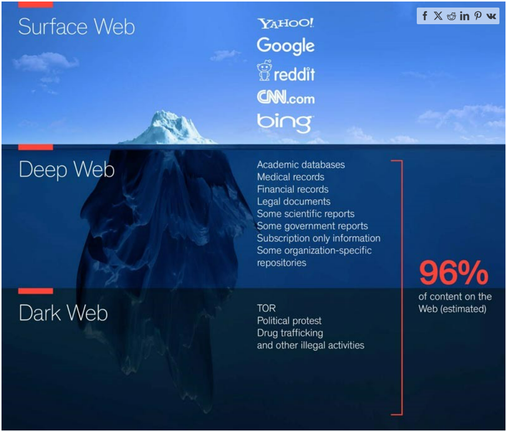
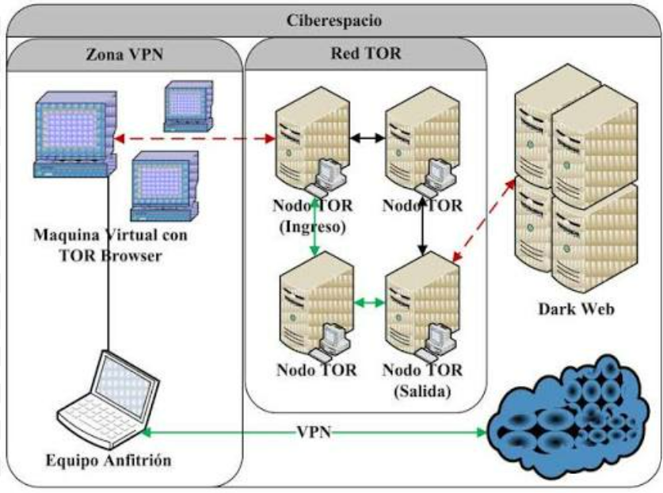
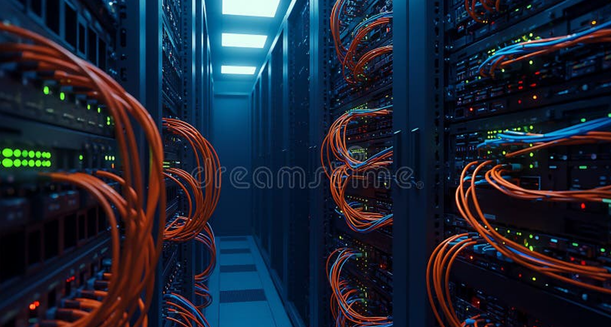

La Deep Web, o "internet profunda", es la parte de Internet que
no está indexada por los motores de búsqueda tradicionales como Google
o Bing. Esto no significa que sea un lugar secreto o exclusivamente ilegal: en
realidad, la mayoría de su contenido es totalmente cotidiano.
Bases de datos académicas, correos electrónicos privados, historiales médicos,
plataformas de streaming con contenido bajo suscripción, intranets corporativas
y bandejas de correo son ejemplos comunes de contenido que forma parte de la
Deep Web, simplemente porque un buscador no puede acceder ni mostrar esa
información al público.

El iceberg es la analogía más usada para representar las capas de Internet.
¿En qué consiste? ¿Cómo funciona conceptualmente?
Internet puede pensarse como un enorme iceberg. La parte visible sobre el agua
es la Surface Web: todo lo que un buscador puede rastrear e
indexar. Bajo la superficie está la Deep Web, contenido que
existe pero que requiere una contraseña, un formulario o un enlace directo para
acceder a él.
Dentro de esa capa profunda existe una porción mucho más pequeña conocida como
Dark Web, a la que solo se puede acceder mediante software
especializado que cifra y anonimiza las conexiones, redirigiendo el tráfico a
través de múltiples servidores (nodos) alrededor del mundo antes de llegar a su
destino.

El tráfico se enruta a través de varios nodos para preservar el anonimato.
Video explicativo
Surface Web, Deep Web y Dark Web
Comparación de las capas de Internet
Capa
Acceso
Ejemplos
Surface Web
Buscadores normales (Google, Bing)
Noticias, redes sociales, blogs
Deep Web
Requiere inicio de sesión o enlace directo
Correo, banca en línea, bases de datos académicas
Dark Web
Software especializado de anonimato
Foros cifrados, publicaciones anónimas
Datos curiosos
Se estima que la Surface Web representa apenas una pequeña fracción del contenido total de Internet.
La Dark Web nació de un proyecto de la Marina de los Estados Unidos para comunicaciones anónimas
seguras.
No toda la Deep Web requiere software especial: tu bandeja de correo ya forma parte de ella.
Existen bibliotecas académicas, archivos históricos y foros científicos alojados exclusivamente en
la Deep Web.
Mitos y realidades
Mito: Toda la Deep Web es ilegal. Realidad: La mayor parte es
contenido cotidiano y legítimo, solo que no está indexado.
Mito: Entrar a la Deep Web es un delito. Realidad: Acceder a
contenido no indexado no es ilegal por sí mismo; lo ilegal depende de la actividad que se realice.
Mito: Deep Web y Dark Web son lo mismo. Realidad: La Dark Web
es solo una pequeña porción dentro de la Deep Web.
Riesgos y seguridad
La Dark Web, en particular, concentra riesgos importantes: mercados de bienes
ilegales, estafas, contenido malicioso y foros vinculados a actividades
delictivas. También existen amenazas técnicas como malware disfrazado de
archivos legítimos y sitios diseñados para robar información personal.
Por eso es fundamental proteger la privacidad: usar contraseñas seguras, evitar
compartir datos sensibles, mantener el software actualizado y desconfiar de
enlaces o descargas de origen desconocido son prácticas básicas de seguridad en
cualquier capa de Internet.
La seguridad y la privacidad son responsabilidad de cada usuario.
Video explicativo
Evolución de Internet
Internet comenzó como una red académica y militar limitada. Con el tiempo se
popularizó y creció exponencialmente, dando lugar a la Surface Web que
conocemos hoy. Sin embargo, a medida que aumentaba la necesidad de privacidad,
de bases de datos privadas y de comunicaciones seguras, surgieron naturalmente
las capas más profundas de la red, incluyendo las herramientas de anonimato que
hoy sustentan la Dark Web.

La infraestructura de servidores ha sido clave en la evolución de Internet.